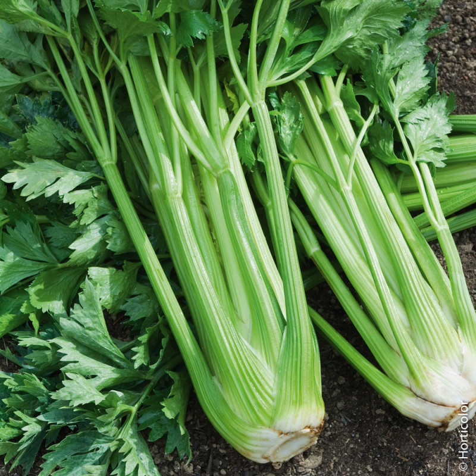
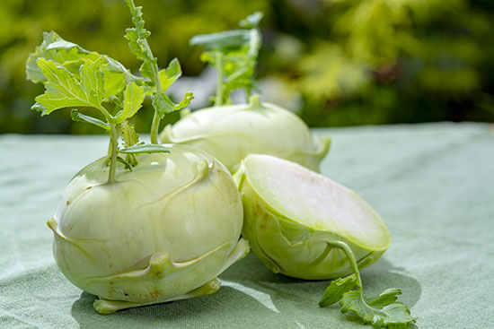
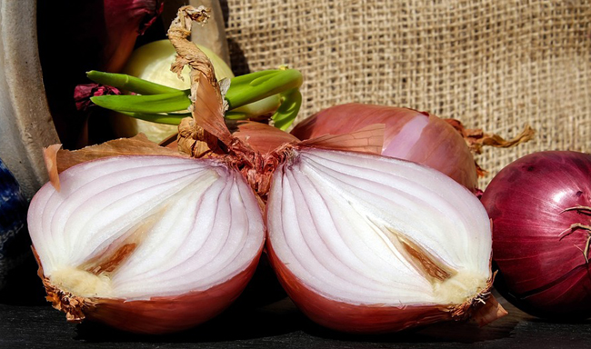
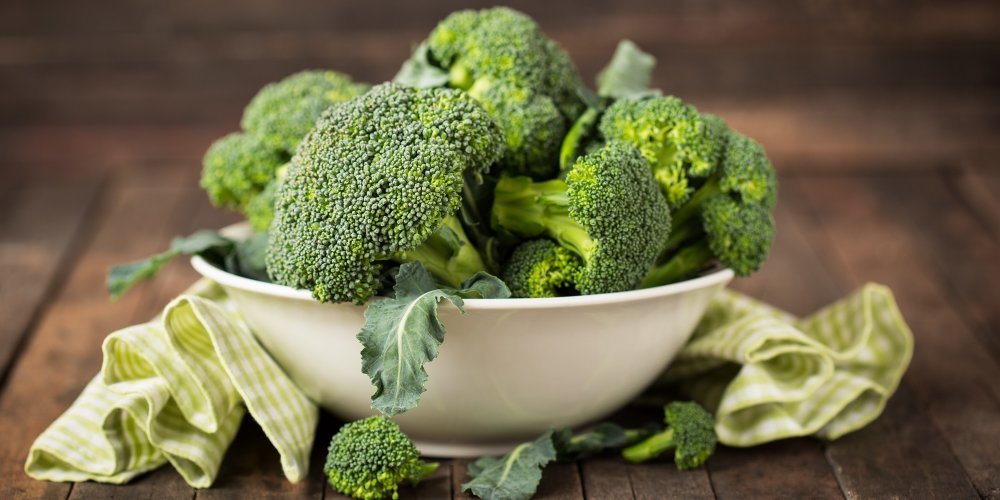
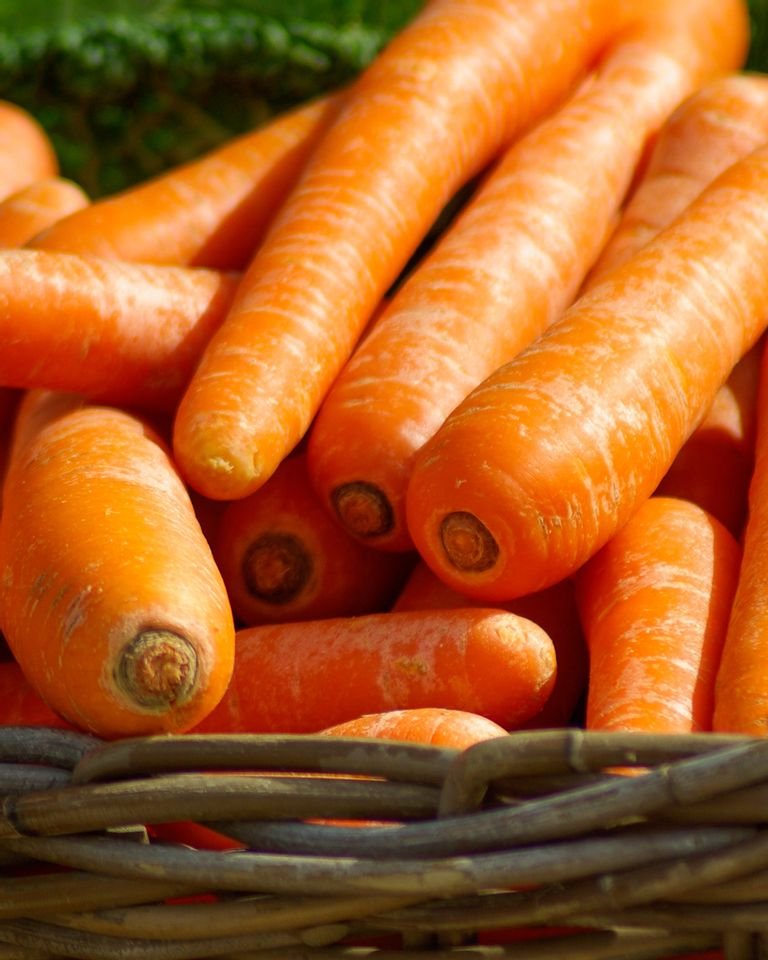
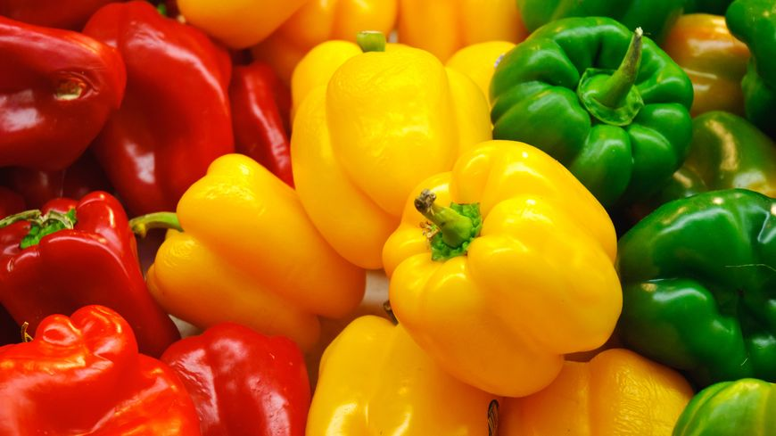
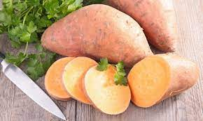
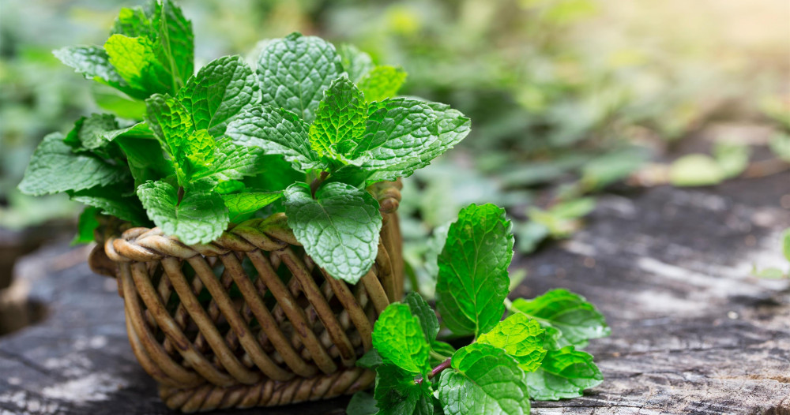

Les légumes feuilles
Les légumes-feuilles, dont on consomme les feuilles,
parfois seulement le limbe, la base des feuilles ou le pétiole. Ce sont d'abord les salades (endive,
laitue, mâche, romaine, scarole, etc.) Mais aussi le chou, l'épinard, l'oseille, et le céleri.

Les légumes-tiges
Les légumes-tiges dont on consomme des parties de la tige, comme les jeunes
pousses turions : asperge, pousses de bambous ou la base de la tige comme la
« racine » tubérisée du chou-rave, etc.

Les bulbes des Amaryllidacées
Les bulbes des Amaryllidacées sont souvent utilisés comme condiments : ail, échalote, oignon, etc.

Les légumes fleurs
Les légumes-fleurs dont on consomme les inflorescences ou les fleurs en boutons : chou-fleur, brocoli,
câpre, ou bien le réceptacle floral du jeune capitule : artichaut, Gundelia.

Les légumes-racines
les légumes-racines : betterave, carotte et panais, navet, radis, rutabaga, salsifis, scorsonère, cerfeuil tubéreux, etc.

Les légumes fruits
Les légumes-fruits consommés en tant que légumes, mais constituant le fruit, au sens botanique, de la plante :
aubergine, avocat, chayote, concombre, cornichon, courge, courgette, gombo, melon, olive, pastèque, poivron, piment, tomate, etc.
À cette catégorie se rattachent aussi les gousses récoltées avant maturité : petit pois, haricot vert .

Les tubercules
les tubercules, organes issus de la tubérisation de tiges souterraines,
se distinguent par leur forte teneur en glucides de réserve (amidon ou inuline) :
crosne du Japon, igname, oca du Pérou, patate douce, pomme de terre, topinambour, etc.

Les fines herbes
Les « fines herbes », utilisées comme condiments pour leurs arômes, qui ne sont pas à proprement parler des légumes
: basilic, cerfeuil, ciboulette, estragon, laurier, menthe, persil, romarin, thym, etc.
